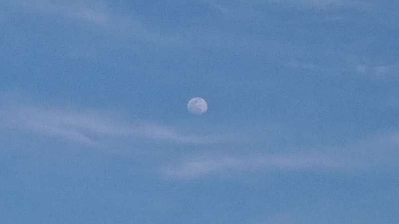
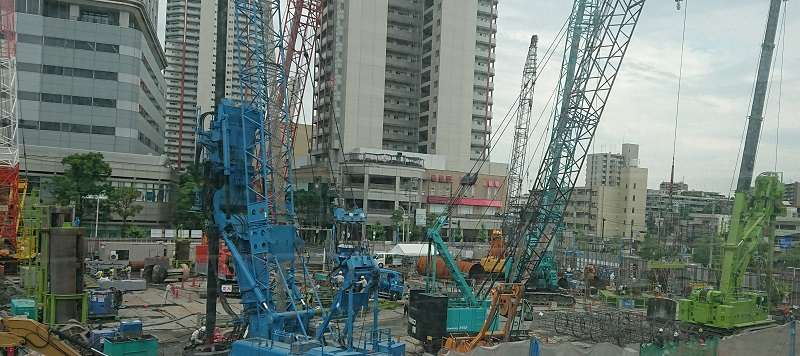
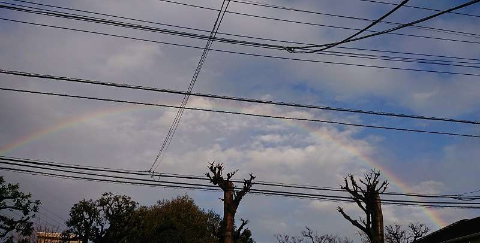
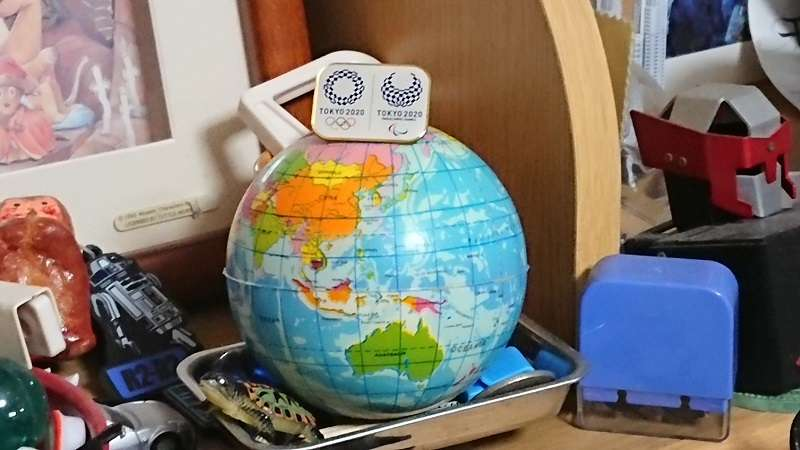
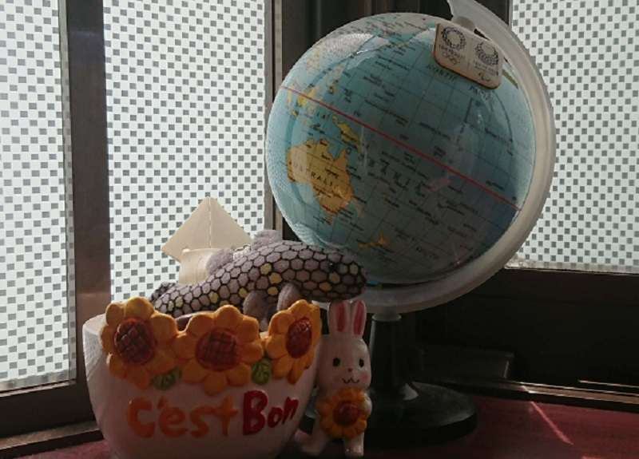
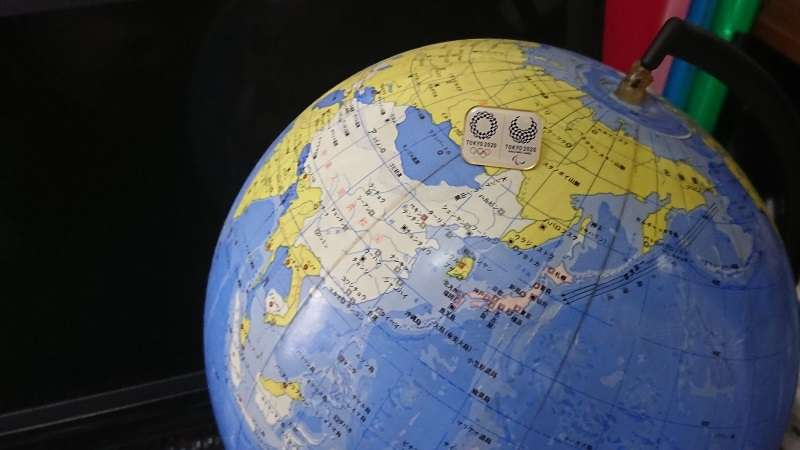

Wander's room
Wander's room
天地に満ちる
陽気が良くなって暖かくなり
黄色から赤に増す紅花にテントウムシの頃ですね
体も心も日差しを求め
自由に動きたくなります
楽しいものや 面白いもの
人は短い時の中で 何を探して
何が出来るのだろう
互いのための制約を守り
自らを どう活かすのか
何処までもとんがっていても良し
何処までも広くても
まん丸だって 点だっていいよ
全てに必要が有る
建設現場
遠くから見ればアナログで
近くから見ればデジタルだ
アナログとデジタルは１つのもので
見方や角度が違うだけだった
今まではアナログ的にしか捉えられなかったものが
これからはデジタルにも捉えられ
俯瞰抽象にも細分緻密にも幾つかの段階がある
まだまだ先はあるけれど
取りあえず一歩 公平に見えるデジタルへ進んでいきたい
誤魔化しのきかない ある意味公平な社会システムを
１つの自然系で 全てが繋がっている地球で
雨上がりの虹と電線
自然が人工を生み 育ててきた
自然にとって人工は なかなか いいアクセントだ
２億１００万年前のジュラ紀には無かった物
自然から抽出し加工された ヘンテコな物ばかりだ
蜂による蜂の巣の様な物かな
生きた自然体系の中で上手く人工物を活かす事が出来るだろうか
よくバランスをとって 調和の有る進化が出来るだろうか
多様な生態系を活かせる世界か
人間しかいない世界か
どれだけ長生きしても つまらない世界では寂しい
１億年以上君臨してきた先輩達
恐竜達に 申し訳が立たないだろう
この虹に未来を つないでもらおう
ブルーインパルスが５輪を描く
1964年１回目の東京オリンピック国立競技場の観客数は７万４千人
2020年１年延期の2021年２回目の東京オリンピック新国立競技場
7月23日観客数はコロナ禍のため無観客で行われた 史上初の出来事だ
東京都は４回目の緊急事態宣言の中
アスリート達はこの日この時を夢見、最善を尽くし目指してきた場所だ
オリンピックの意義が問われる中 国民や世界に対して
どんなパフォーマンスやメッセージが発せられるのか？
205の国の選手 感謝と賞賛 人々の情緒や感性が
国や文化や思想を超えて一つになって欲しい
と言う思いが開会式のテーマになっている
映像で招致から８年間の歩み
プロジェクションマッピングで四季の流れを表現
赤いロープの光で 血管や不安 焦り 葛藤
そして立ち上がり 心をつなぎ合わせ
希望を持って前を向く 最善の最適化へ
過ぎ去りし５輪の聖火
天皇陛下ご臨席のもと日本国旗掲揚 ミーシャの国歌斉唱
森山未來の前衛ダンス そしてコミュニティの仲間の死を悼む黙祷
木遣り歌 棟梁役の真矢ミキ さすがに男役は一品だ
多様性と調和の響き タップダンスと民踊
1964年に集まった国々からの種から出来た木材で作った五輪
各国選手団の入場 もちろん先頭はギリシャ 続く難民選手団
以降は日本語で「あいうえお順」 最後は日本 白ジャケットに赤パンツ
205の国 1万1千人あまりの出場者 より早くより高くより強く共に
テレビ局クルーのコント 3種類(国,文化,思想)の四角が エンブレムに
上空にも1824台のインテルのドローンがエンブレムに
そして球体から地球へ より豊かな未来にトランスフォームさせたい
50年前に発表されたジョンとヨーコのイマジンが流れ
アジア, アフリカ, ヨーロッパ, アメリカ, オセアニアの代表が歌う
橋本聖子東京オリンピック・パラリンピック組織委員会会長
トーマス・バッハ国際オリンピック委員会会長
天皇陛下による第32回オリンピック東京大会2020開会宣言
花火,オリンピック旗,空から紙飛行機,ピクトグラム50のパフォーマンス
劇団ひとり, 荒川静香コント 照明でイタズラ 競技会場がライトアップ
ギリシャから聖火の火が運ばれ日本へ 全都道府県2000km
オリンピック3連覇の柔道野村氏レスリング吉田氏から
王貞治,長嶋茂雄,松井秀喜にそしてドクター＆ナース →
パラリンピック夏冬金のトライアスロン土田和歌子 →
岩手宮城福島県の６人の子供達→ 最終ランナーはテニスの大坂なおみ
球体が開いて聖火台にトランスフォーメーション 57年ぶりに東京に
聖火がともされ17日間に33競技339種目が始まる
そして多様性と調和のオリンピックが8月8日に閉幕した
良くも 悪くも コロナ禍でも 人は 寝て食って動く 共に
パラリンピック アギト
165カ国が参加しパラリンピックは24日に始まった
オープニングビデオが流れ カウントダウン そして花火
最初はたとえ 小さな風であっても
皆の思いが 大きなムーブメントにもなる
アギトスカラーの花火が上がり アスリート達の入場だ
難民選手団をかわきりに あいうえお順のアイスランド
そして最後が開催国の日本選手団
各競技が障害の程度により区分けされている
例えば100ｍ競技は29 水泳は146 に分けられていると言うことだ
色々な多様性がくみ取られている
オリパラの組織委員会橋本聖子会長
国際パラリンピック委員会アンドリューパーソンズ会長
天皇陛下の パラリンピック開会の宣言
パラリンピック旗の入場掲揚
楽曲「生きる」が演奏され歌われた
選手・審判・コーチ役員達の宣誓
パフォーマンスが始まり 左翼のない小さな飛行機と
デコトラ(布袋寅泰のロックギターやダンスなど)
その人だけが持っている光 その光のパフォーマンス
1948年7月29日、英国ロンドン郊外にあるストークマンデビル病院の
一角でひっそりと行われた第一回ストークマンデビル競技大会が原点
ドイツ生まれのユダヤ人神経外科医のグットマン博士 ナチスの台頭で
英国に逃れストークマンデビル病院で脊髄損傷の治療に当たり
治療としてのスポーツに着目
なんと競技大会当日は戦後初のオリンピックロンドン大会だった
そして競技大会は毎年行われ
1960年は第17回オリンピックローマ大会閉幕6日後
第1回パラリンピック8競技57種目が8日間開催された
新しい風が 三色に統合し 巻き上がった 様々な障害が加わり
これで何らかの障害がある25％の人々と共生社会を目指す
障害は起こりうる自分達の未来と統合し多様化していく
人間は相互に関わり合いながら生きる
生きとし生けるものの全てを 歴史や遺伝子に持つ
それが誰1人抜けてはいけない理由だ
そんな思いを込めて各地から採火した火で聖火が点火され
9月4日まで12日間22競技539種目が開幕した
